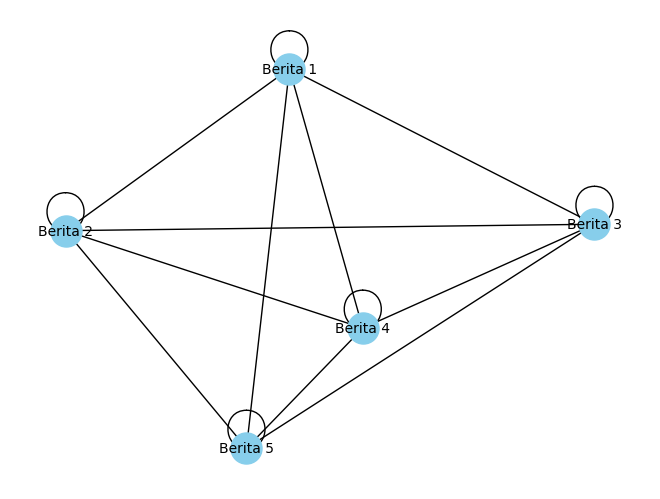

#Ekstraksi Dokumen#
!pip install requests beautifulsoup4
Requirement already satisfied: requests in /usr/local/lib/python3.10/dist-packages (2.31.0)
Requirement already satisfied: beautifulsoup4 in /usr/local/lib/python3.10/dist-packages (4.11.2)
Requirement already satisfied: charset-normalizer<4,>=2 in /usr/local/lib/python3.10/dist-packages (from requests) (3.3.2)
Requirement already satisfied: idna<4,>=2.5 in /usr/local/lib/python3.10/dist-packages (from requests) (3.4)
Requirement already satisfied: urllib3<3,>=1.21.1 in /usr/local/lib/python3.10/dist-packages (from requests) (2.0.7)
Requirement already satisfied: certifi>=2017.4.17 in /usr/local/lib/python3.10/dist-packages (from requests) (2023.7.22)
Requirement already satisfied: soupsieve>1.2 in /usr/local/lib/python3.10/dist-packages (from beautifulsoup4) (2.5)
import requests
import pandas as pd
from bs4 import BeautifulSoup
# Inisialisasi list untuk menyimpan data dari semua halaman
all_data = []
# Jumlah halaman yang ingin di-crawl
total_pages = 1
# Looping untuk mengambil judul dan isi konten berita dari setiap halaman
for page in range(1, total_pages + 1):
# URL target dengan nomor halaman
url = f"https://news.detik.com/indeks/{page}"
# Mengirim permintaan HTTP GET ke URL
response = requests.get(url)
# Memeriksa apakah permintaan berhasil
if response.status_code == 200:
# Parsing HTML dengan BeautifulSoup
soup = BeautifulSoup(response.text, 'html.parser')
# Cari semua elemen <h3> dengan class 'media__title'
judul_berita_elements = soup.find_all('h3', class_='media__title')
# Looping untuk mengambil judul dan isi konten dari setiap berita
for judul_element in judul_berita_elements:
# Mengambil judul berita
judul_berita = judul_element.text.strip()
# Mengambil URL selengkapnya
selengkapnya_link = judul_element.find('a')['href']
# Mengirim permintaan HTTP GET ke halaman selengkapnya
selengkapnya_response = requests.get(selengkapnya_link)
if selengkapnya_response.status_code == 200:
selengkapnya_soup = BeautifulSoup(selengkapnya_response.text, 'html.parser')
# Mencari dan mengambil isi konten berita
isi_berita_elements = selengkapnya_soup.find_all('div', class_='detail__body-text')
isi_berita = "\n".join([elem.text.strip() for elem in isi_berita_elements])
else:
isi_berita = "Tidak dapat mengambil berita"
# Menambahkan data ke list
all_data.append([judul_berita] + [isi_berita])
else:
print(f"Gagal mengambil halaman {url}, kode status: {response.status_code}")
# Membuat DataFrame dari list data
berita_online = pd.DataFrame(all_data, columns=["Judul Berita", "Isi Berita"])
berita_online
| Judul Berita | Isi Berita | |
|---|---|---|
| 0 | Suami Bakar Eks Dirut RSUD Sidempuan gegara Ta... | Batam - Motif pembunuhan eks Direktur RSUD Pad... |
| 1 | Crane Terbalik di Jalan Mayor Oking Bogor Sele... | Bogor - Alat berat crane di lokasi perbaikan J... |
| 2 | Kakak Rafael Alun Ngaku Titip Rubicon tapi Dip... | Jakarta - Kakak kedua Rafael Alun Trisambodo, ... |
| 3 | Adu Perspektif Malam Ini, Hegemoni Jokowi dan ... | Jakarta - Kontestasi Pilpres 2024 memasuki bab... |
| 4 | Cerita Capres-Cawapres Makan Nasi Liwet Bareng... | Jakarta - Calon wakil presiden (cawapres) Gibr... |
| 5 | Jelang Konser, Coldplay Didemo Massa Geranati ... | Jakarta - Coldplay akan menggelar konser di St... |
| 6 | Sadisnya Suami di Batam Bunuh dan Bakar Eks Di... | Batam - Tetty Rumondang Harahap, yang ditemuka... |
| 7 | Bareng Camat-Danramil, Kapolsek Mampang Deklar... | Jakarta - Kapolsek Mampang Prapatan, Kompol Da... |
| 8 | Kelakar Ahmad Sahroni Tak Masuk Timnas AMIN: M... | Bendahara Umum Partai NasDem, Ahmad Sahroni me... |
| 9 | Polisi Dalami Profil 4 Orang Mirip Sosok di CC... | Jakarta - Empat orang dinyatakan mirip sosok d... |
| 10 | Massa Demo Tolak Coldplay di Dekat GBK Ricuh | Jakarta - Massa mengatasnamakan Geranati LGBT ... |
| 11 | Kaesang Sungkem ke Megawati, Ade Armando: Menu... | Jakarta - Politikus PSI Ade Armando mengataka... |
| 12 | Maybank Indonesia Tanda Tangani Lisensi Soundt... | Jakarta - PT Bank Maybank Indonesia, Tbk. (May... |
| 13 | Kakak Rafael Alun Ungkap Deretan Aset Warisan ... | Kakak pertama Rafael Alun, Petrus Giri Hesnawa... |
| 14 | Waka DPRD Surabaya Dorong Penerapan Smart City... | Jakarta - Wakil Ketua DPRD Kota Surabaya Reni ... |
| 15 | Pasukan AS di Irak-Suriah Sudah Diserang 55 Ka... | Jakarta - Pasukan Amerika Serikat yang ditemp... |
| 16 | Prabowo-Gibran Nomor Urut 2, Prabowo Mania 08:... | Jakarta - Organisasi relawan Prabowo Mania 08 ... |
| 17 | Demokrat: Kami Sampai 1 Oktober 2024 Masih Opo... | Waketum Partai Demokrat, Benny K Harman mengat... |
| 18 | Prabowo Sambut Menhan AS Lloyd Austin Jelang A... | Jakarta - Menteri Pertahanan (Menhan) RI Prabo... |
| 19 | Persatuan Advokat Demokrasi Indonesia Adukan A... | Jakarta - Persatuan Advokat Demokrasi Indonesi... |
#Bentuk TF-IDF isi berita
#Mengambil 5 data sebagai contoh
data = berita_online['Isi Berita'].head(5)
from sklearn.feature_extraction.text import TfidfVectorizer
import pandas as pd
# Inisialisasi TfidfVectorizer
tfidf_vectorizer = TfidfVectorizer()
# Mengubah teks berita menjadi vektor TF-IDF
tfidf_matrix = tfidf_vectorizer.fit_transform(data)
# Membuat DataFrame untuk hasil TF-IDF
df_tfidf = pd.DataFrame(tfidf_matrix.toarray(), columns=tfidf_vectorizer.get_feature_names_out())
#Kosinus similaritas
df_tfidf
| 00 | 03 | 11 | 12 | 13 | 14 | 15 | 16 | 20 | 2023 | ... | wartawan | waspada | wib | widodo | with | ya | yakni | yandri | yang | yuda | |
|---|---|---|---|---|---|---|---|---|---|---|---|---|---|---|---|---|---|---|---|---|---|
| 0 | 0.000000 | 0.000000 | 0.023174 | 0.000000 | 0.000000 | 0.000000 | 0.027399 | 0.000000 | 0.000000 | 0.023174 | ... | 0.000000 | 0.000000 | 0.000000 | 0.000000 | 0.023174 | 0.000000 | 0.000000 | 0.000000 | 0.092696 | 0.2918 |
| 1 | 0.040623 | 0.050351 | 0.023993 | 0.000000 | 0.000000 | 0.000000 | 0.028367 | 0.000000 | 0.000000 | 0.023993 | ... | 0.050351 | 0.000000 | 0.040623 | 0.000000 | 0.023993 | 0.000000 | 0.000000 | 0.000000 | 0.143956 | 0.0000 |
| 2 | 0.000000 | 0.000000 | 0.017170 | 0.000000 | 0.000000 | 0.000000 | 0.000000 | 0.029071 | 0.000000 | 0.017170 | ... | 0.000000 | 0.000000 | 0.000000 | 0.000000 | 0.017170 | 0.024132 | 0.000000 | 0.000000 | 0.068680 | 0.0000 |
| 3 | 0.021691 | 0.000000 | 0.064056 | 0.053771 | 0.053771 | 0.026886 | 0.015147 | 0.021691 | 0.053771 | 0.038433 | ... | 0.000000 | 0.026886 | 0.021691 | 0.065073 | 0.012811 | 0.036011 | 0.021691 | 0.026886 | 0.166544 | 0.0000 |
| 4 | 0.000000 | 0.000000 | 0.022925 | 0.000000 | 0.000000 | 0.000000 | 0.027104 | 0.000000 | 0.000000 | 0.022925 | ... | 0.000000 | 0.000000 | 0.000000 | 0.038815 | 0.022925 | 0.032220 | 0.038815 | 0.000000 | 0.045849 | 0.0000 |
5 rows × 714 columns
from sklearn.metrics.pairwise import cosine_similarity
import pandas as pd
# Menghitung matriks similarity
similarity_matrix = cosine_similarity(tfidf_matrix, tfidf_matrix)
# Membuat DataFrame untuk similarity matrix
df_similarity = pd.DataFrame(similarity_matrix, columns=range(1, len(data) + 1), index=range(1, len(data) + 1))
# Menampilkan similarity matrix
print("Similarity Matrix:")
df_similarity
Similarity Matrix:
| 1 | 2 | 3 | 4 | 5 | |
|---|---|---|---|---|---|
| 1 | 1.000000 | 0.076820 | 0.053670 | 0.087550 | 0.073294 |
| 2 | 0.076820 | 1.000000 | 0.065960 | 0.096987 | 0.077013 |
| 3 | 0.053670 | 0.065960 | 1.000000 | 0.079983 | 0.060963 |
| 4 | 0.087550 | 0.096987 | 0.079983 | 1.000000 | 0.319685 |
| 5 | 0.073294 | 0.077013 | 0.060963 | 0.319685 | 1.000000 |
#Graph
!pip install networkx matplotlib
Requirement already satisfied: networkx in /usr/local/lib/python3.10/dist-packages (3.2.1)
Requirement already satisfied: matplotlib in /usr/local/lib/python3.10/dist-packages (3.7.1)
Requirement already satisfied: contourpy>=1.0.1 in /usr/local/lib/python3.10/dist-packages (from matplotlib) (1.2.0)
Requirement already satisfied: cycler>=0.10 in /usr/local/lib/python3.10/dist-packages (from matplotlib) (0.12.1)
Requirement already satisfied: fonttools>=4.22.0 in /usr/local/lib/python3.10/dist-packages (from matplotlib) (4.44.0)
Requirement already satisfied: kiwisolver>=1.0.1 in /usr/local/lib/python3.10/dist-packages (from matplotlib) (1.4.5)
Requirement already satisfied: numpy>=1.20 in /usr/local/lib/python3.10/dist-packages (from matplotlib) (1.23.5)
Requirement already satisfied: packaging>=20.0 in /usr/local/lib/python3.10/dist-packages (from matplotlib) (23.2)
Requirement already satisfied: pillow>=6.2.0 in /usr/local/lib/python3.10/dist-packages (from matplotlib) (9.4.0)
Requirement already satisfied: pyparsing>=2.3.1 in /usr/local/lib/python3.10/dist-packages (from matplotlib) (3.1.1)
Requirement already satisfied: python-dateutil>=2.7 in /usr/local/lib/python3.10/dist-packages (from matplotlib) (2.8.2)
Requirement already satisfied: six>=1.5 in /usr/local/lib/python3.10/dist-packages (from python-dateutil>=2.7->matplotlib) (1.16.0)
import networkx as nx
import matplotlib.pyplot as plt
# Menggunakan similarity matrix dari contoh sebelumnya
G = nx.from_pandas_adjacency(df_similarity)
# Mengatur label pada node
labels = {i: f"Berita {i}" for i in G.nodes}
# Membuat posisi node (gunakan salah satu algoritma posisi, misalnya spring_layout)
pos = nx.spring_layout(G)
# Menggambar graf
nx.draw(G, pos, with_labels=True, labels=labels, node_size=500, node_color='skyblue', font_size=10, font_color='black')
# Menampilkan graf
plt.show()

#Closeness Centrality
import networkx as nx
# Menggunakan similarity matrix dari contoh sebelumnya
G = nx.from_pandas_adjacency(df_similarity)
# Menghitung closeness centrality
closeness_centrality = nx.closeness_centrality(G)
# Menampilkan closeness centrality dari setiap node
for node, centrality in closeness_centrality.items():
print(f"Node {node}: Closeness Centrality = {centrality}")
Node 5: Closeness Centrality = 1.0
Node 4: Closeness Centrality = 1.0
Node 3: Closeness Centrality = 1.0
Node 2: Closeness Centrality = 1.0
Node 1: Closeness Centrality = 1.0
import networkx as nx
# Menggunakan similarity matrix dari contoh sebelumnya
G = nx.from_pandas_adjacency(df_similarity)
# Menghitung closeness centrality
closeness_centrality = nx.closeness_centrality(G)
# Menghitung PageRank
pagerank = nx.pagerank(G)
# Menghitung eigenvector centrality
eigenvector_centrality = nx.eigenvector_centrality(G)
# Menambahkan closeness centrality, pagerank, dan eigenvector centrality ke setiap node
for node, centrality in closeness_centrality.items():
G.nodes[node]['Closeness Centrality'] = centrality
G.nodes[node]['PageRank'] = pagerank[node]
G.nodes[node]['Eigenvector Centrality'] = eigenvector_centrality[node]
# Menampilkan closeness centrality, pagerank, dan eigenvector centrality dari setiap node
for node, data in G.nodes(data=True):
closeness = data['Closeness Centrality']
pagerank = data['PageRank']
eigenvector = data['Eigenvector Centrality']
print(f"Node {node}: Closeness Centrality = {closeness}, PageRank = {pagerank}, Eigenvector Centrality = {eigenvector}")
Node 5: Closeness Centrality = 1.0, PageRank = 0.21084595222317268, Eigenvector Centrality = 0.4472135954999579
Node 4: Closeness Centrality = 1.0, PageRank = 0.217170432219052, Eigenvector Centrality = 0.4472135954999579
Node 3: Closeness Centrality = 1.0, PageRank = 0.18851959752436212, Eigenvector Centrality = 0.4472135954999579
Node 2: Closeness Centrality = 1.0, PageRank = 0.19279381527954795, Eigenvector Centrality = 0.4472135954999579
Node 1: Closeness Centrality = 1.0, PageRank = 0.19067020275386512, Eigenvector Centrality = 0.4472135954999579